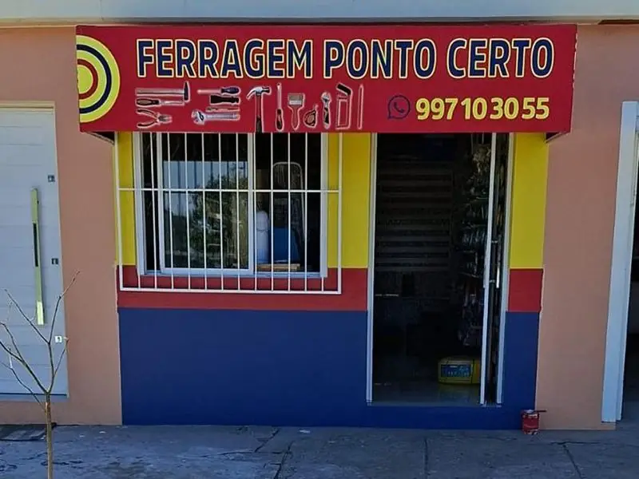
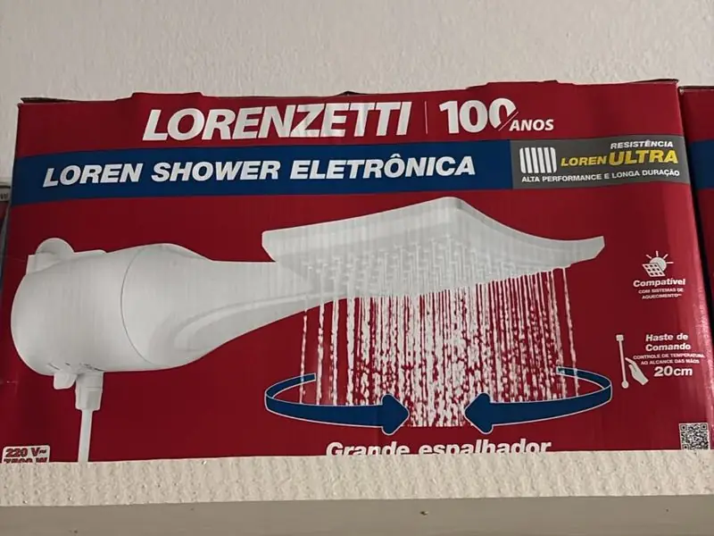
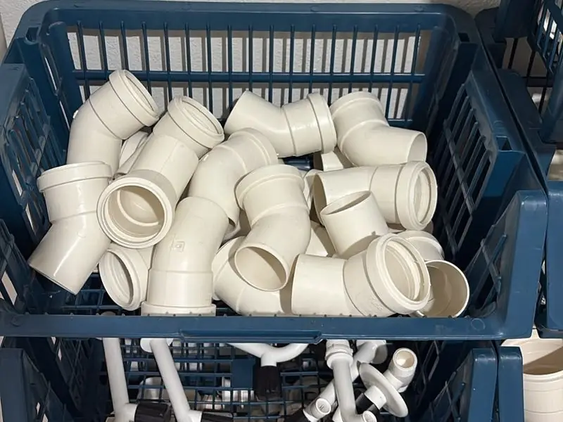
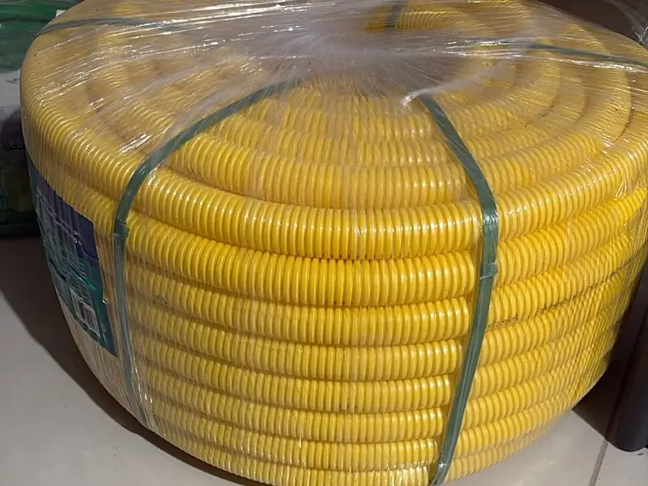
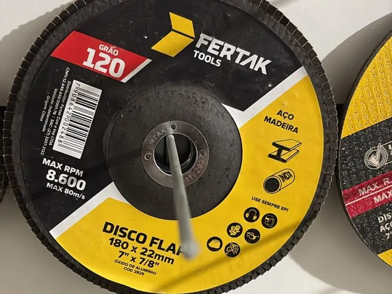
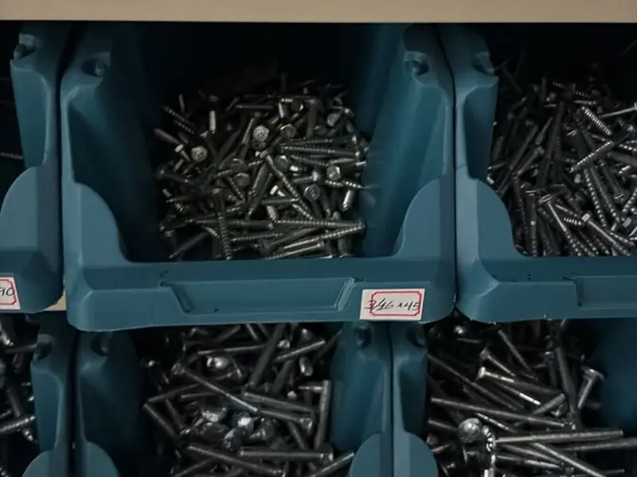
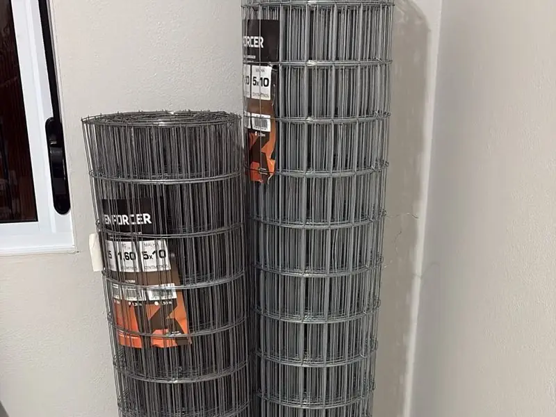

Ferragem · Vila Izabel · Canguçu - RS
Tudo para sua obra, reparo e manutenção, no ponto certo.
Chuveiros, hidráulica, material elétrico, ferramentas, parafusos e telas. Pergunte pelo WhatsApp se tem o item: fazemos entrega.

O que você encontra aqui
Toque em uma categoria para perguntar pelo WhatsApp.
-

Chuveiros e resistências Chuveiros e duchas Lorenzetti e Zagonel, resistências de reposição Perguntar no WhatsApp → -

Hidráulica e banheiro Conexões de PVC para esgoto, sifões, assentos sanitários Perguntar no WhatsApp → -

Material elétrico Eletroduto corrugado (conduíte) e itens para instalação Perguntar no WhatsApp → -

Ferramentas e abrasivos Discos flap e de corte, trenas Irwin e Fertak Perguntar no WhatsApp → -

Parafusos e fixação Parafusos a granel em várias medidas Perguntar no WhatsApp → -

Telas e arames Tela soldada para cercas, canis e galinheiros Perguntar no WhatsApp →
Procurando um item específico?
Escreva o que precisa (e a medida, se souber). A mensagem já vai pronta para o WhatsApp da loja, que responde se tem e quanto custa.
Onde estamos
Rua João de Deus Nunes, 404Vila Izabel · Canguçu - RS
CEP 96600-000
Horário
| Segunda a sexta | 8h às 11h30 e 13h às 18h |
|---|---|
| Sábado | 8h às 12h |
| Domingo e feriados | Fechado |
Pagamento
Dinheiro · Pix · Cartão de crédito e débito
Entrega
Fazemos entrega. Combine pelo WhatsApp.
Telefone
(53) 99710-3055 (também WhatsApp)